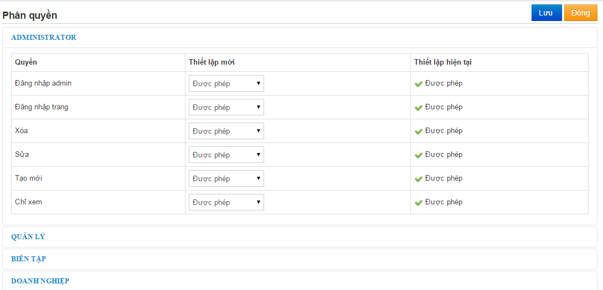
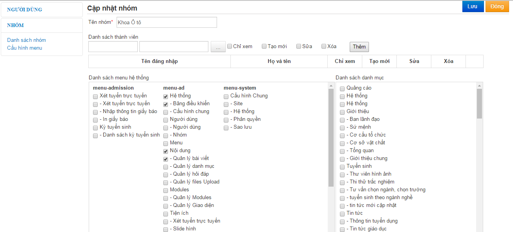
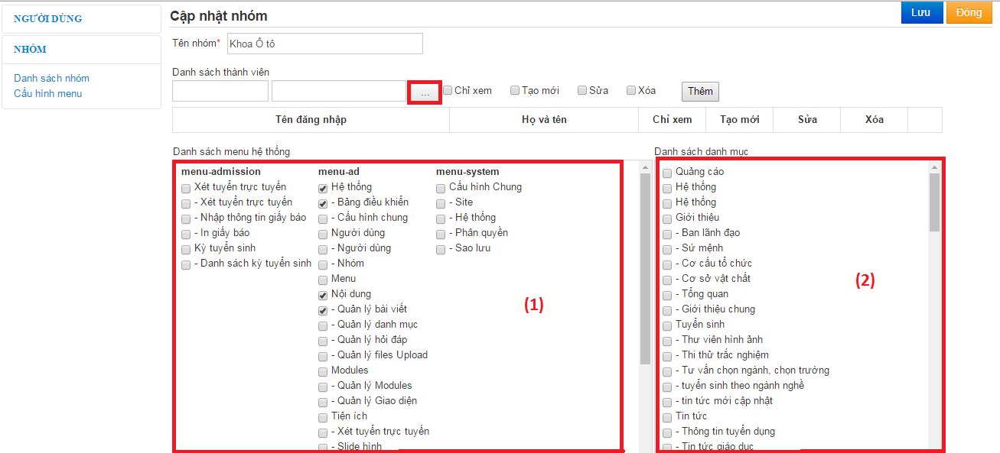
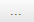
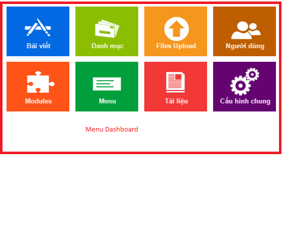

- Phân quyền giới hạn quyền trong nhóm
- Vào Menu A.Hệ thống -> 2. Cấu hình chung -> Phân quyền

- Thiết lập quyền (Được phép/ Không được phép) -> Nhấn Lưu lại để hoàn.
- Thiết lập quyền trong nhóm
- Vào B.Người dùng -> 2.Nhóm -> Chọn nhóm cần phân quyền

- Danh sách quyền chỉ hiện thị những quyền đã thiết lập trong phần phân quyền cho nhóm.
- Phần danh sách menu check những menu cho phép nhóm có thể truy cập.
- Nhấn nút lưu để hoàn tất.
- Vào B.Người dùng -> 3.Nhóm hệ thống -> Chọn nhóm

- Để thêm người dùng vào nhóm nhấn nút . Chọn người dùng cần thêm vào nhóm. Nhấn Nút thêm.
- Danh sách menu (1) là những menu, danh mục trong trang quản trị, Menu Dashboard danh sách các menu trong trang bảng điều khiển
- Danh sách danh mục (2) là danh mục trong bài viết. Khi check vào danh mục nào thì user sẽ có quyền vào danh mục đó.
